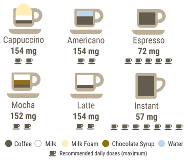

បើសិនជាយើងចាត់ទុកពាក្យញៀននៅត្រង់នេះដូចជាការញៀនគ្រឿងញៀន (ហេរ៉ូអុីន កូកាអុីន អំហ្វេតាមីន)នោះ យើងអាចឆ្លើយបានថា កាហ្វេមិនញៀនឡើយ។ គ្រាន់តែថាសំរាប់អ្នកខ្លះគឺអត់កាហ្វេមិនបាន។ទោះជាយ៉ាងនេះក្តី ការអត់កាហ្វេមិនបាន មិនមានលក្ខណៈខ្លាំងក្លា ហើយកាហ្វេក៏មិនធ្វើអោយប៉ះពាល់ដល់សុខភាពផ្លូវកាយនិងផ្លូវចិត្តធ្ងន់ធ្ងរដល់អ្នកផឹកដូចគ្រឿងញៀនធ្វើចំពោះអ្នកប្រើគ្រឿងញៀនឡើយ។ កាហ្វេគ្រាន់ធ្វើអោយអស់លុយបន្តិចប៉ុណ្ណោះ។
ហេតុអ្វីអ្នកខ្លះអត់កាហ្វេមិនបាន? ហើយត្រូវការកាហ្វេកាន់តែច្រើនទៅៗ?
ការកើនឡើងនេះ មានន័យថាអ្នកផឹកកាហ្វេត្រូវការកាហ្វេអុីនកាន់តែច្រើនឡើងដើម្បីទទួលបានឥទ្ធិពលរបស់កាហ្វេ។ នៅ
ពេលដែលអ្នកផឹកកាហ្វេជាប្រចាំ ឈប់ផឹកភ្លាមៗ ធ្វើអោយឥទ្ធិពលរបស់អាដេណូសុីន(ធ្វើអោយមនុស្សអស់កំលាំង)កើតមានឡើងកាន់តែខ្លាំងព្រោះមានវត្តមានដ៏ច្រើននៃឧបករណ៍ទទួលសញ្ញារបស់អាដេណូសុីន។ ប្រការនេះធ្វើអោយ អ្នកដែលឈប់ផឹកកាហ្វេភ្លាមៗមានអាការៈឈឺក្បាល ហើយងងុយដេក។ អាការៈនេះនឹងកើតមានត្រឹមតែ៧ទៅ១២ថ្ងៃប៉ុណ្ណោះ។ ប្រសិនបើអ្នកអាចឆ្លងផុតដំណាក់កាលនេះ អ្នកនឹងអាចឈប់ផឹកកាហ្វេបាន ព្រោះចំនួនឧបករណ៍ទទួលសញ្ញាអាដេណូសុីននឹងថយចុះមកធម្មតាវិញ។
សរុបមក ផឹកកាហ្វេល្អរឺអត់?
យើងមិនអាចបដិសេធឥទ្ធិពលរបស់កាហ្វេធ្វើអោយមនុស្សស្រស់ស្រាយ ស្វាងងងុយ និងមានថាមពលបំពេញការងារបានល្អឡើយ។ បន្ថែមលើសនេះ ការសិក្សាមួយចំនួនអោយយោបល់ថាកាហ្វមានអត្ថប្រយោជន៍កាត់បន្ថយជំងឺមហារីក ជំងឺទឹកនោមផ្អែមប្រភេទទី២ ជំងឺបេះដូង និងជំងឺDepressionផងដែរ។
ទោះជាយ៉ាងនេះក្តី អ្នកផឹកកាហ្វេគួរផឹកក្នុងបរិមាណសមស្របគឺប្រហែល២០០mgនៃជាតិកាហ្វេអុីនក្នុងមួយថ្ងៃ រឺ ១ទៅ ២កែវនៃកែវ១៨០ml រឺអាចដល់៤០០mg រឺ៤កែវ។ ការផឹកកាហ្វេអុីនលើសពី៤០០mg អាចបណ្តាលអោយមានវិបត្តិដូចជាឈឺក្បាល គេងមិនលក់ រសាប់រសល់ ញ័រសាច់ដុំ បេះដូងលោតញាប់ជាដើម។
